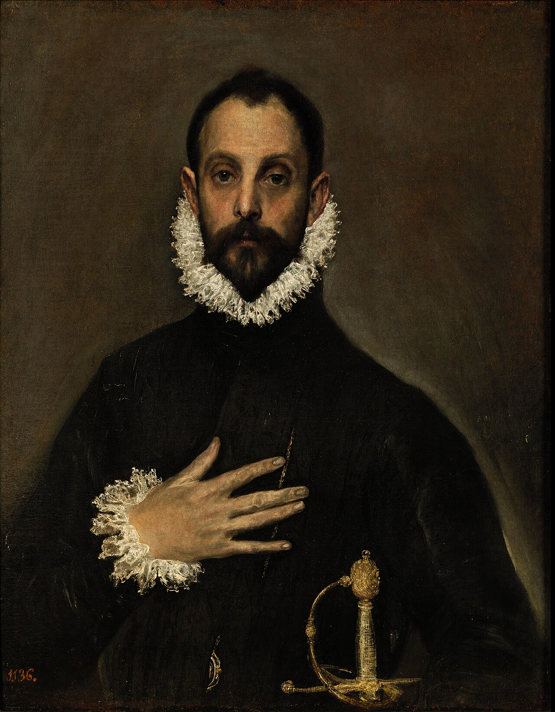

Como Asistente de Dirección y Comunicación, me encargo de la gestión y coordinación de agendas, reuniones y eventos. Además colaboro estrechamente con el Dircom como Comms. Specialist para Gonzalo Abellán, Co-founder y CTO.

02 / Quién soy
Chica, qué dices??
Es en el margen entre lo que decimos y lo que hacemos donde nos descubrimos como personas. Por eso prefiero que me conozcas a través de mis proyectos.
Aunque si lo que quieres es cotillear un poco sobre mi historia personal (very valid, won't judge) sigue scrolleando.

Formación
Graduada en Publicidad & RR.PP.
2018 - 2022 por la Universitat Jaume I de Castellón
Graduada en Comunicación Audiovisual
2022 - 2024 por la Universitat Jaume I de Castellón
Idiomas
- RUSOLengua nativa
- ESPAÑOLSegunda lengua nativa
- VALENCIANOCertificat Oficial Administratiu C1(JQCV)
- INGLÉSC1 Advanced (Cambridge English Exams)
Experiencia(s)
Especialista en marketing digital: desarrollo de campañas publicitarias, creación de contenido, diseño gráfico, edición de vídeo y tareas como Community Manager.
Auxiliar de montaje y desarrollo de tareas de postproducción del largometraje MI CIELO TU INFIERNO (A. Evangelio, 2025). Diseño de sonido, rotulación y subtitulación con Aegisub, además de colaborar con otras áreas para la elaboración de dosieres de venta y la distribución de cortometrajes.
Experiencia como parte del European Young Jury en la sección Director's Week durante la edición del año 2024.
Jurat Jove en la sección oficial de cortometrajes en la edición número 38 del festival (2023).
Voluntaria en apoyo a la organización del festival en el año 2023.
+ forma ción
Formación complementaria
"GUION DE FICCIÓN CINEMATOGRÁFICA"
Organizado e impartido por Radio Televisión Española - 2024
CURSO "LENGUAJE INCLUSIVO Y NO SEXISTA"
Organizado por la Unidad de Igualdad y la Fundación Isonomia de la Universitat Jaume I - 2022
CURSO FORMATIVO "TIK TOK 101"
Especialización en el manejo de la plataforma con fines publicitarios, organizado por Tik Tok Academy - 2023
"COPYWRITING PARA COPYWRITERS"
A través de la plataforma Domestika e impartido por la agencia creativa PutosModernos - 2023
"TÉCNICO EN DISEÑO GRÁFICO PARA RR.SS."
A cargo de la plataforma Valenciactiva y el Ajuntament de València - 2024
CURSO DE SOCIAL MEDIA MANAGER
Organizado por la Oficina de Estudios de la Universitat Jaume I - 2022
CURSO EDICIÓN CON PHOTOSHOP
Organizado por la Cámara de Comercio de Castellón de la Plana - 2023
"CREACIÓN DE CORTOMETRAJES CON DSLR"
A través de la plataforma Domestika e impartido por el filmmaker Rafa Jacinto - 2023
Manifesto
03 / Qué hago
EL CLIENTE:
BEEFEATER
La marca aterriza con una idea clave: celebrar la diversidad en tono positivo. Partiendo del insight de que el respeto en su pura definición es un ideal difícil de conquistar, apostamos por empezar dándole el valor que realmente merecen a esas pequeñas declaraciones de respeto que practicamos en nuestro día a día, pues son precisamente estas las que encaminan a la sociedad hacia una más tolerante.

"In theory, people have respect for the other,
but daily life demonstrates exactly the opposite"
But first,
una declaración de intenciones
Para interpretar el punto de partida de Beefeater, era necesario entender su lucha: una revolución que empezaba desde lo más pequeño de cada uno.

De esta manera, nace:
Y sus pequeñas obras de arte
EL EJE
Beefeater celebra las pequeñas acciones, que son las que cambian el mundo.
¿CÓMO?
Otorgándole un gran valor a esas pequeñas acciones, hasta el punto de valorarlas como obras de arte.
¿POR QUÉ?
Porque, al igual que cada pincelada de Van Gogh o cada palabra de Jane Austen, las pequeñas acciones de respeto pueden acabar dándole la vuelta al mundo.
CLAIM: "El arte de las pequeñas acciones"

EL COLLAGE
Pues reinventa una obra del pasado y la plantea desde una perspectiva diferente. Así, constituye en sí una pequeña revolución.

EL CABALLERO DE LA MANO EN EL PECHO (El Greco, 1578)
Supone una deconstrucción de los atributos que antaño definían a los hombres y de la denominada "masculinidad frágil".

LAS TRES GRACIAS (Rubens, 1630)
El canon de belleza es aún más inclusivo pues también participan mujeres transexuales y de otras culturas no caucásicas, todas despojadas de los rasgos tradicionalmente femeninos.
Por último, un paso más allá:
STORYDOING

MUSEOS VACÍOS
Beefeater crea expectación con un acto de rebeldía: vaciando las salas de los museos más importantes de las ciudades españolas, en las que solo deja una firma tras su paso.
POSTERIOR FIESTA DE INAUGURACIÓNREPRESENTACIÓN DEL RESPETO
La marca abre un sorteo en su página de Instagram donde los usuarios pueden enviar qué es para ellos el respeto, así como todas aquellas pequeñas acciones relacionadas con este.
Los ganadores del mismo verán sus ideas plasmadas por pequeños artistas de cada ciudad (en forma de pintura, baile, teatro, música o performance). De esta forma y mediante la participación del consumidor, se pretende representar el respeto como un arte más.

EL CLIENTE:
ECOEMBES
"Los jóvenes de hoy en día no están comprometidos con el reciclaje a pesar de conocer sus consecuencias"
Ecoembes, una organización sin ánimo de lucro, se enfrenta a su público más rebelde: los jóvenes. Y es que, tras realizar una investigación, la mayoría de ellos reciclan en sus hogares, pero remarcan su frustración ante la imposibilidad de poder hacerlo cuando se encuentran en la calle. He aquí el reto.

UN PROPÓSITO,
Una nueva sociedad que apuesta por el cuidado del medio ambiente necesita las herramientas y los medios para poder hacerlo. Y la publicidad no debe quedarse atrás. Más allá de comunicar una marca o un producto, la publicidad ha de ser útil. Ha de solucionar los problemas de los ciudadanos. Ha de ayudar.
UN PEQUEÑO CAMBIO
Un mupi publicitario que, tras predicar un mensaje sobre la concienciación de la importancia del reciclaje, lo pudiera tangibilizar de alguna manera. Palabras y hechos.
Algo tan sencillo como añadir a los carteles existentes una papelera que diferenciase entre plásticos y papel era la solución que empujaría no solo a los jóvenes a reciclar incluso en la calle.


¿POR QUÉ?
Una campaña dirigida a los jóvenes valencianos tenía que conectar con ellos sin demasiada palabrería. No hacía falta convencerles de que lo hicieran, pues ellos ya sabían bien la importancia que tiene reciclar. Lo único que les faltaba era el medio. Ah, y una frase que les sacara una sonrisa.

LA TERRETA
Un recordatorio de las raíces, de aquello que siempre les pertenecerá durante toda su vida. Ya sea de una manera más tradicional que casi nos recuerda a nuestros abuelos de una manera nostálgica (gráficas 1 y 3) o algo más modernillo como la famosa frase de Miquel Montoro (gráfica 2).
EL CASO
BRUMA
"Necesitábamos crear una marca que representase nuestra manera de entender el mundo de los aromas"
Una pequeña familia de la Comunidad Valenciana con una gran pasión por los beneficios de los aceites esenciales deseaba regalar al mundo un producto único. Una mirada nueva que, siendo respetuosa con el medio ambiente, seduciera el sentido olfativo de cualquier persona.


REFORMULACIÓN
Con ánimo de crear una marca natural, única y, como el producto mismo, "hecha a mano", se crea un formato digital del curioso difusor de aceites esenciales. Este respira una estética más desenfada, cercana y familiar. Los valores de Bruma.
COMUNICAR EL AROMA


PERSONALIZACIÓN
El funcionamiento del propio difusor hace que el usuario/a pueda elegir entre una infinidad de olores diferentes. E incluso juntar los existentes para crear el que más le reconforte. Es por ello que, para cada persona, Bruma huele a su olor favorito.
OLORES HOGAREÑOS
En la realización de las gráficas intervino la artista Petra Braun, que plasmó el funcionamiento de Bruma en su uso doméstico, empleando "formas de casa". De esta manera, el difusor se dibuja como ese elemento que hace de una casa un hogar.
EL CLIENTE:
DUREX
"Durex ha de dar el siguiente paso y solucionar una tensión social existente en la actualidad"
La marca quería conectar con sus consumidores de una manera diferente, creando un producto-obsequio que reflejase los valores de Durex. Porque las marcas van más allá de vender sus productos, deseaban resolver de una manera simple pero creativa esos pequeños conflictos presentes en la sociedad.


TENSIÓN SOCIAL
El teléfono móvil se recalienta en días de mucho calor y puede dejar de funcionar. Especialmente en la playa.
SOLUCIÓN
Una funda de móvil isotérmica resistente a esos días tan calurosos del verano. Hecha con doble laminado de plástico de poliestireno + lámina de foam (aislante).
Así, nace:
#ProtégeteDelCalentón


CLAIM
"No todos los calentones son buenos"
HASHTAG
#ProtégeteDelCalentón
MEDIOS
Mupis de las principales ciudades de España, especialmente en aquellas zonas costeras.

EJE DE COMUNICACIÓN
"Durex te protege a ti y a tu teléfono móvil"
CONCEPTO
Representar la utilidad del producto mediante la cultura visual y la jerga del target.
TONO
Un estilo de comunicación fresco, divertido y descarado. Igual que su target (23 a 35 años).
EL CLIENTE:
CROCS
"Es hora de que una marca hable de moda desde la comodidad, tanto por su uso como por cómo se siente esa persona expresando su identidad"
Crocs, que desde la pandemia del coronavirus ha ido incrementando su salto al medio digital, desea hacer una exploración de cómo las personas se sienten usando sus icónicas zapatillas. Abarcando la versatilidad de los zuecos desde 2 perspectivas.

LA FÓRMULA MÁGICA:
BRANDED CONTENT

EL MEDIO: GLAMOUR TV
Glamour TV es el medio digital de la revista Glamour desde el año 2010. En esta página web existen diferentes secciones que agrupan vídeos por temáticas: Moda, Belleza, Celebrities, etcétera. Además, cuenta con un apartado llamado Brand Channel en el que realiza contenido en colaboración con distintas marcas.
Actualmente, esta sección solo acoge a Adidas y Dior, por lo que entendemos que sería un buen espacio donde desarrollar contenido para la marca Crocs.
¿CROCS Y GLAMOUR?
Sorprendentemente, la respuesta es sí. Crocs se adapta perfectamente a la línea editorial del medio de Glamour, así como a los intereses del target: mujeres de entre 18 y 49 años que se preocupan por su apariencia, se interesan por las tendencias en moda, son activas en redes sociales (sobre todo Instagram), se sienten empoderadas y además lo transmiten en su día a día.
En su exploración por la versatilidad, Glamour es el medio perfecto para Crocs.

EL CONTENIDO: MINISERIES
HABLANDO DE COMODIDAD
La nueva sección #GetComfy by Crocs estará compuesta por 6 vídeos que se publicarán semanalmente. En cada uno de ellos, una persona relacionada con el mundo de la moda contará de manera más personal cuál es su forma de entender la moda, cuáles son sus tendencias favoritas y cómo aplica la versatilidad en su día a día.

NUEVAS MODAS
Durante los últimos años, Crocs ha apostado por acercar su estrategia de comunicación así como sus diseños a un público más joven y atrevido. La constante innovación en estampados de moda como el tie dye y accesorios como los Jibbitz han conseguido atraer al público millennial hasta el punto de posicionar a las Crocs como un nuevo icono del streetwear a nivel mundial.
COMODIDAD ANTE TODO
Además de hacer referencia directa al tipo de calzado que ofrece Crocs, el nombre de la sección viene a remarcar un aspecto fundamental de la marca. Mediante la creación de un espacio patrocinado por Crocs, se pretende que los invitados se sientan cómodos hablando sobre su propia identidad bajo el techo de la marca.
EL CASO
CULTÚRA
"Durante la pandemia, se ha constatado que la cultura sirve a la sociedad para mantener un estado positivo en momentos negativos"
La FEDE-Aepe buscaba una campaña que, apelando a la conciencia de los ciudadanos, pusiera el foco sobre la importancia de la cultura en esa función positiva, destacando su disponibilidad en cualquier situación (incluida la pandemia).

Nuestra propuesta: la plataforma
CULTÚRA es una aplicación móvil diseñada para facilitar el consumo (y apoyo) de la cultura. El usuario solamente tiene que descargar la app, seleccionar una zona geográfica de España y la interfaz le ofrecerá una serie de eventos programados, los cuales aparecerán ordenados cronológicamente como si de una cartelera de cine se tratase.
El usuario podrá filtrar los resultados por precio, edad recomendada del público, duración y otras variables clave.
Para fomentar la participación ciudadana en el consumo de cultura, se habilitará un apartado en la propia app para poder acumular puntos y poder canjearlos por descuentos en próximos eventos culturales.

Eje de la campaña: la cultura se activa gracias a las personas.
Concepto: literalmente "activar" la cultura mediante la participación ciudadana.
Target: mujeres y hombres de entre 25 y 55 años. Interesados por distintas ramas de la cultura (música, cine, fotografía, teatro...) Su entorno también comparte estos intereses. Tienen un poder adquisitivo medio.
Call to action
Marquesinas interactivas con reconocimiento gestual.
Aparece un acontecimiento cultural listo para ser reproducido (concierto, baile, pintura, orquesta...) Al mover la mano comienza la interacción.
Con los movimientos de la persona se activa el display con vídeo y música. Cuando la persona para de moverse, el display se detiene hasta nueva orden.
Tras el display, aparece el claim y un código QR que permite descargar la aplicación móvil.
App móvil
OBJETIVO: facilitar el acceso a la cultura integrando toda la oferta cultural en el mismo portal. Se pueden filtrar los eventos por tipologías, distancia, edad recomendada, precio, etc.
Posibilidad de obtener descuentos por acumulación de puntos.
Mueve tus manos para activar la
CULTÚRA¡bien!
🖐 ♫ 🖐TÚ activas la cultura
TÚ creas la cultura
 Descubre la nueva manera de apoyar nuestra cultura
Descubre la nueva manera de apoyar nuestra cultura
REBRANDING
CONCEPTO: situar al consumidor (TÚ) como pieza central de la marca. Como una entidad creadora del universo en el que habita la cultura, cuya existencia posibilita todo lo demás.

Colores cálidos, naturales y alegres
Remarcan ese tono positivo de la cultura.
#FF8A00
&
#54775E
Logotipo
Sigue resaltando al consumidor: "TÚ".


Sistema visual
Tipografía delicada con tono sofisticado. Aplicación user friendly e intuitiva. Tanto en la app como en las gráficas, copy que vuelve a remarcar el papel central del consumidor.
PROYECTO
TRANSMEDIA
Construcción de una narrativa ramificada que de a conocer de cerca la situación de los cines de la ciudad de Castellón de la Plana
Desde la asignatura de Hipermedia del grado de Comunicación Audiovisual y en colaboración con El Mundo se nos ha sugerido informar de esta situación en concreto de una manera muy peculiar.

CREACIÓN DE LA IDENTIDAD
El nombre del proyecto debía ser simple y fácilmente identificable ante el público objetivo. Por este motivo, se ha optado por juntar dos conceptos clave, los cines y Castellón: CineCas. Esto sigue de cerca el naming de algunos servicios clave de la ciudad como por ejemplo el BiciCas.
Se ha optado por el color verde, identificativo de la ciudad, acompañado de un beige neutro. Además, en su logotipo se ha introducido otro elemento identificatorio como lo es el Fadrí junto a unas cintas de película. La tipografía escogida sigue esta misma idea pues se trata de la tipografía usada para la escritura de guiones, la Courier New.
PARTES CLAVE DEL PROYECTO:
BLOG
Informar sobre la situación de las salas de cine y sobre tendencias cinematográficas
PODCAST
"Sala 10" como un espacio de reflexión. Dos episodios: mesa redonda y entrevista.
REPORTAJE
Reportaje fotográfico que narra el cambio de las salas de cine tras la pandemia
VÍDEO
Vídeo de entrevistas a profesionales y a personas a pie de calle sobre las salas
RR.SS.
Diferente tipo de contenido (redireccionado) según la red: Facebook, Instagram y Twitter
+ VIDEOJUEGO
UNA HISTORIA
El apartado de ramificación de CineCas cuenta la historia de un abuelo y de una nieta que desean reconstruir el último cine de la ciudad, también llamado CineCas. Para ello, la nieta deberá ir recogiendo por la ciudad una serie de películas que su abuelo le ha ido escondiendo. Las pistas se ofrecerán a lo largo de la historia y especialmente en el vídeo (bajo construcción).
CON DOS PROTAGONISTAS
Carlos y Carla son los protagonistas de esta historia. Se han escogido estos nombres por su letra inicial haciendo referencia a la ciudad.

PLATAFORMA
La plataforma escogida es Twine debido a que permite la creación de narrativas cuyo desarrollo dependerá de las decisiones que vaya tomando el jugador. Es decir, se trata de un juego de decisiones en forma de ramificaciones.
INTERTEXTUALIDAD
El objetivo es reunir esas 5 películas que además tienen que ver con los espacios en los que se encuentran escondidas y con la propia ciudad. Por ejemplo, la primera película se esconde en un saco de semillas del mercado central (Amélie) y la segunda en el Fadrí (Vértigo).
RESULTADO FINAL:
EL CLIENTE:
LA FEDE AEPE
En los últimos años, la publicidad exterior se ha visto afectada gravemente a causa del Covid-19. Durante el 2020, el medio exterior tuvo una caída del 47,7% en su inversión. Ante el confinamiento de la población, el medio perdió interés para las agencias, ya que si las personas no salían a la calle, insertar publicidad en los soportes exteriores carecería de sentido.
Sin embargo, con la paulatina recuperación de la situación sanitaria y económica del país, la calle se ha vuelto a poner en valor y ha vuelto a generar interés, tanto para las personas de a pie como para el mundo de la publicidad.

17/03/2022: XX SEMINARIO DE PUBLI EXTERIOR

But first,
un cartelazo.
Aunque obviamente nos tentó jugar con ese "XX" de la vigésima edición del seminario, hicimos un brainstorming de conceptos relacionados con la publicidad exterior. El concepto de la calle acaparó toda nuestra atención y por ese entonces había una expresión que nos gustaba mucho decir:
"Tía, te falta calle"
SU PROBLEMA
La bajada en la inversión del medio exterior por parte de las agencias y los anunciantes ante la crisis que ha supuesto la llegada del Covid-19.
EL ANUNCIANTE
La Federación de Empresas de Publicidad y Comunicación en colaboración con la Asociación Española de empresas de Publicidad Exterior.
Así, nace:


OBJETIVO DE COMUNICACIÓN
Destacar las virtudes y las características claves del medio exterior como el medio más real en un mundo cada vez más digital. En defensa de un medio ubicado donde la gente vive, disfruta, compra, consume, se relaciona, se divierte y tiene experiencias reales.
TARGET
El principal target son las agencias y los anunciantes, pero también se pretende dirigir a las personas de a pie.

EJE DE COMUNICACIÓN
Para establecer el eje de comunicación partimos de la siguiente metáfora: la sal da sabor a la comida, al igual que la publicidad exterior da sabor a nuestras calles, llenándolas de personalidad, de gusto y de encanto. Partiendo de esta idea, podemos relacionar a una persona "salada" (una persona con gracia, encanto, ingenio…) con el propio medio exterior debido a sus diversas posibilidades y a la atractiva creatividad que nos puede ofrecer.
CLAIM: #ElMedioMásSalao
ACCIONES
FASE 1
Los ciudadanos votarán por uno de los cinco soportes que concursarán para ganar el premio al soporte más salao: la lona, el mupi, la marquesina, el autobús y la valla. Como se ha visto, cada uno de ellos portará una frase ingeniosa que lo identifique y defienda.


FASE 2
La segunda fase de la acción busca darle protagonismo al soporte que gane el concurso. De esta manera se implantará una gráfica en el soporte ganador en varios puntos de las ciudades más grandes del país. La gráfica llevará el copy "Soy el soporte más salao. Y no lo digo yo, lo dices tú:" acompañado de la frase más creativa de entre las personas que hayan votado por ese soporte ganador. De esta manera, se busca poner en valor esa participación por parte de la población, quedando así satisfecha la relación entre medio y target.


:)
"Actualmente, la burbuja del fútbol se ha pinchado y no es algo por lo que culpar a la pandemia, sino más bien tiene que ver con el desapego de los aficionados hacia un deporte en cuya estructura prioriza el negocio"
Esto se suma también al desarraigo de una generación que está más interesada en consumir otro tipo de contenido como los videojuegos, los "eSports" o plataformas de vídeo en streaming.

CENTENARIO VILLARREAL C.F.
¿UN CENTENARIO?
La investigación realizada reveló que el 82% de los encuestados desconocían la existencia del centenario del Villarreal C.F. Por ello, fue de vital importancia una re-campaña que diera a conocerlo antes de iniciar sus diferentes acciones.
Además se revelaron varios insights interesantes:
- ¿Qué mueve a los aficionados a abonarse? el sentimiento de pertenencia al Villarreal C.F.
- ¿Qué valores asocia el público al club? cercanía, trabajo, esfuerzo, compañerismo y pasión.
EJE DE COMUNICACIÓN:
"Los cumpleaños se celebran con la familia y los amigos y, por eso, desde el Villarreal C.F. lo queremos celebrar contigo"

PLAN DE ACCIONES TÁCTICAS DEL CENTENARIO

OBJETIVOS
El objetivo principal de esta campaña gira en torno a la comunicación del centenario del Villarreal C.F. que se celebrará en el año 2023.
Los objetivos específicos son:
1) Acercar el club al público objetivo para así aumentar su fidelización con el mismo.
2) Reforzar el sentimiento de "familia" y el de comunidad que tanto caracteriza a este club.

INDICADORES DE ÉXITO
Se proponen un tal de 3 medidas con tal de evaluar los logros conseguidos:
1) Encuesta entre el público en general para conocer el posicionamiento del club, así como si la reputación y percepción del Villarreal C. F han aumentado positivamente.
2) Conocer el impacto que se ha tenido con el contenido en redes sociales analizando las interacciones, número de nuevos seguidores, shares.
3) Averiguar si la campaña ha supuesto un aumento del número de socios así como de personas que acuden al estadio a ver los partidos.
PUBLICIDAD EXTERIOR


+ ACCIONES:

LOGOTIPO
Creación de un nuevo logotipo que represente los años de historia del club.

MASCOTA
Aunque queremos mucho a Groguet, necesita un pequeño lavado de cara (invirtiendo sus colores).

CAMISETAS
Creación de una camiseta conmemorativa del centenario.

ÁLBUM
Un álbum familiar que recoja todos esos pequeños acontecimientos que han hecho de un club una familia.
DOCUMENTAL #100AnysAmbTú
Finalmente, se plantea la realización de un cortometraje documental con el objetivo de agradecer el apoyo a toda la afición, así como a todas aquellas personas que forman parte del Villarreal C.F. y trabajan día a día para que siga siendo un gran club.
Para ello, se tomarán imágenes durante el evento del centenario desarrollado anteriormente y también se recuperarán imágenes de archivo.
Se sortearán 100 entradas para asistir al estreno del documental, que se podrá disfrutar rodeado de los jugadores, jugadoras y demás miembros de la directiva, convirtiendo así a los seguidores en uno más de la familia.